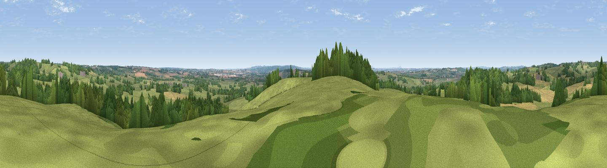

Upper Park
#28040 in England · top 40% of its area beats it · near SaltWhere it is
The exact computed spot (SJ 96225 29625). Click the marker for map links.
The view, rendered

A 360° render of this exact spot computed from the terrain model, tree cover and land cover — summer colours, afternoon light, calibrated against photographs of famous viewpoints. Real trees, hedges and buildings will differ in detail.
The panorama
Grey silhouette: terrain skyline in each direction (720 bearings, Earth curvature and refraction included). Dashed green: skyline with trees (+15 m) and buildings (+8 m) as obstacles. Blue strip: how far the ground is visible on each bearing.
Where the view opens
Wedge length = distance to the farthest visible ground on that bearing (vegetation-aware). Rings at 10, 25 and 50 km.
What fills the view
66% grassland · 20% woodland · 13% cropland ·
Angular shares of the visible panorama (visual magnitude), not map area. Landscape diversity 0.39 (0–1 Shannon).
Key numbers
More beautiful places nearby
The staircase of upgrades: each row has a higher view potential than everything closer. Driving times are estimates from straight-line distance, calibrated against real road routing — check an actual route before setting out.
| Place | Direction | Drive | Score |
|---|---|---|---|
| Viewpoint near Aston-by-Stone | NW · 4 km | ~9 min | 45.6 |
| Viewpoint near Hopton | SSW · 5 km | ~11 min | 49.7 |
| Viewpoint near Aston-by-Stone | NW · 5 km | ~11 min | 50.7 |
| Viewpoint near Oulton | NW · 6 km | ~13 min | 51.2 |
| Peasley Bank | W · 6 km | ~13 min | 57.2 |
| Stafford Castle | SW · 10 km | ~19 min | 60.6 |
| Viewpoint near Beech | NW · 14 km | ~26 min | 62.1 |
| Viewpoint near Beech | NW · 15 km | ~26 min | 63.7 |
52.86409, -2.05752 · source: dobih hill · position refined by local search. Computed location — check access rights before visiting.